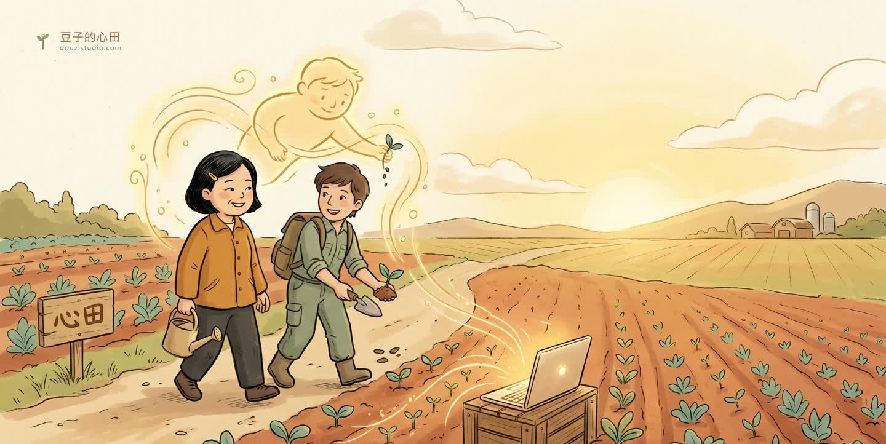
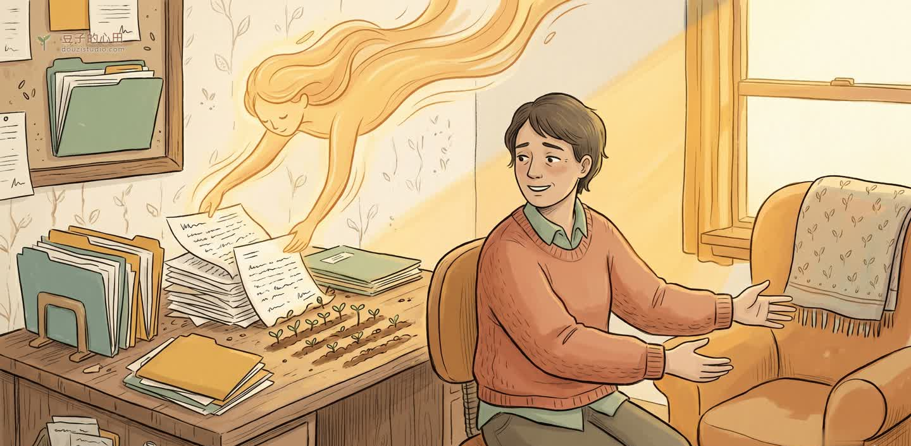

不是幫你做完就走,也不是上一堂課。
是一段時間,我和你並肩,把一個真的能用的東西,一起種出來——而你,也跟著學會了怎麼種。

我會好幾樣東西:接住一個人的深度、把系統真的建出來的務實、還有這一兩年,和 AI 一起工作長出來的方法。陪跑,就是把這些,用在你身上、陪你走一段。你帶著一個卡住的任務或一個想做的東西來,我們一起把它,從模糊變成做得出來。
如果你是諮商師、治療師、社工、輔導老師、教練……你最懂怎麼陪一個人,卻常常被個案紀錄、個案管理、無止盡的行政耗到沒力。
我自己就是助人工作者,也會開發。我可以陪你,做出一套屬於你的 AI 小工具與方法——讓寫紀錄更快、讓個案管理更清楚、讓你把省下的力氣,還給真正重要的人。
也歡迎:想用 AI 長出能力的創作者、轉換期想找新方向的人、任何想跟上 AI、卻不想被它取代的人。

一個小工具、一套流程、一個網站——為你的真實任務量身做出來,不是練習作品。
更重要的是:你學會怎麼自己跟 AI 協作。下次想做新東西,你自己種得出來。
卡住的時候,有一個既懂你的專業、又懂技術的人,在旁邊陪你想、陪你試。
很多事不是不會,是一直沒開始。陪跑給你一個一定會動起來的開始。
從一場「整地」開始——把你想做的、卡住的攤開來,一起決定這一季要長出什麼。
固定節奏的並肩工作(線上)。我示範、你動手、AI 幫忙;每一步你都看得懂、跟得上。
一季結束,你有一個真的能用的東西,也有了自己跟 AI 協作的能力——這塊地,以後你自己會種。